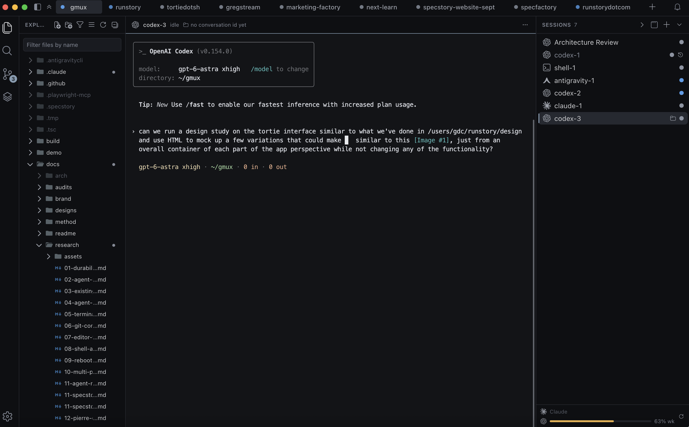

Unpeel’s quiet frame and inset work surface; Tortie’s existing layout and controls.

The study changes surfaces, seams, gutters, and outer corners. Project navigation, agent marks, status meanings, terminal type, and control placement stay consistent.